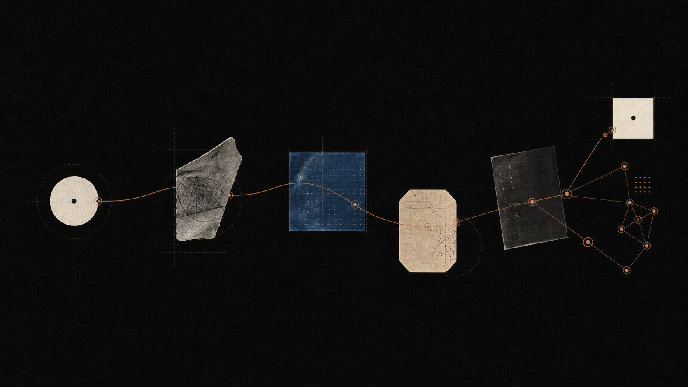

Understanding begins with a question.
Follow a thought through dialogue, recall, and connection.

Questions become a field of study.
Trace a difficult subject through dialogue, recall, and the connections that make it useful again.
Built around hard questions
We do not make the subject smaller. We make the path into it clearer.
Socrates is an AI tutor for people who want to understand—not just finish an answer.
Start where you are. Test the edges of an idea. Return to the useful connection when you need it again.
Explore the learning loop →Latest research